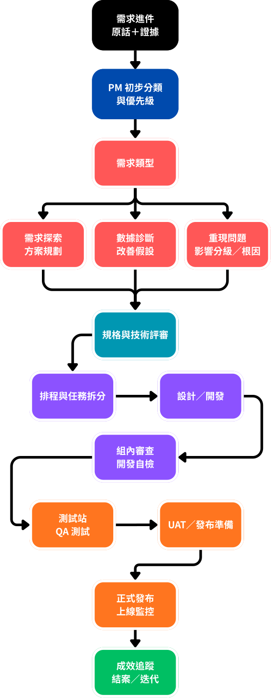

0
PM
要做什麼/產出什麼保留需求原話、提出人、時間、來源、截圖/錄影/紀錄檔/數據
可往下走的條件第三人可理解誰在何情境提出何事，且證據可追溯
所有專案類型共用的核心流程與規則。平台、遊戲、未來新專案類型不重複本文件內容，只在各自的擴充範例裡補上跟核心不同的地方。
所有需求先記錄，再依類型採用合適深度的流程

| 角色 | 職責 |
|---|---|
| PM（含企劃） | PM初步分類：決定問題、優先級、商業範圍與跨單位協調。 規格與技術評審：負責需求探索與規格書撰寫；確認範圍與驗收條件，未定案事項指定決策人與期限；不單方面指定技術實作。 排程與任務拆分：確認任務符合本次範圍、週期與交付日期。 組內審查/開發自檢：協助排除跨組阻塞，不代替組長做技術品質判定。 UAT/發布準備：參與驗收；預期延遲時與需求方協調時程、範圍或優先順序，並更新決策。 |
| 技術組長（依專業：美術/前端/後端/QA/SRE） | 規格與技術評審：參與技術訪談，確認方案、拆分工作、指派成員、回報開始與預計送測日。 組內審查/開發自檢：審核組內產出品質；預期延遲時主動告知 PM，說明原因、影響與替代方案。 |
| 工程/實作 | 設計/開發：依組長分派執行；規格不清時必須回問，不可自行猜測商業邏輯。 |
| 設計 | 設計/開發：負責體驗解法與畫面狀態設計。 |
| QA | 測試站/QA測試：負責測試策略與品質判定。 |
| 需求方 | 需求進件：提出需求。 UAT/發布準備：參與驗收。 |
依模組層、核心流程層、邊界層三層次，把構想轉成結構化功能地圖，作為討論共同語言
參考同類產品的功能範圍與操作方式，作為範圍確認參考
範圍「做」與「不做」確認後整理成書面，作為後續規格與設計依據
前端架構規劃、效能與相容性評估、技術風險提報
資料模型與API設計、商業邏輯與權限規劃、效能與擴充性評估
部署與環境需求評估、監控與告警規劃
| 開發準備完成（DoR） | 完成並可結案（DoD） |
|---|---|
| 問題、目標、範圍/非範圍已定義 | Code Review、自檢、QA、必要UAT通過 |
| 主要負責人、優先級、開發週期、期限已設定 | 驗收條件、文件、埋點、Log、監控已更新 |
| 驗收條件、設計與技術資訊足以開發 | 發版紀錄、回滾、上線觀察已完成 |
| 相依與風險已揭露，QA知道測試範圍 | 已知風險已有後續任務與責任人 |
不要先答應時程或解法。先記錄提出人的原話與證據；PM 的分析請另寫，避免混淆事實與推測。
每個流程要寫成功、失敗、無資料、載入、權限不足與重複操作的結果，不要只寫「系統應正常運作」。
需求變更不可只留在群組訊息；應更新規格文件與 Plane，並重新確認範圍、工時與發布風險。
工程先完成自檢，不要把「尚未測過」的版本交給 QA。QA 是品質驗證，不是代替開發除錯。
確認測試版本、正式版本、Migration、Feature Flag 與回滾方案。沒有回滾方式，不應發布高風險變更。
功能發布不等於結案。PM 要看 KPI，工程/SRE 要看錯誤率、延遲與告警，客服要收集回饋。
依階段查閱各角色參與程度，並提供 RACI、風險登錄與需求變更等管理工具的範例。
| 階段 | PM | 設計 | 前端 | 後端 | QA | SRE |
|---|---|---|---|---|---|---|
| 需求探索 | 主導 | 視需要 | 視需要 | 視需要 | 提前挑戰 | 通常不需 |
| 產品規劃/規格 | 主導 | 參與 | 參與 | 參與 | 提前檢查 | 視風險 |
| 設計 | 協調/確認 | 主導 | 可行性確認 | 可行性確認 | 驗收情境 | 視需要 |
| 技術規劃 | 需求確認 | 諮詢 | 組長主導 | 組長主導 | 可測試性 | 主導維運方案 |
| WBS/時程 | 主導整合 | 視任務參與 | 估算+依賴 | 估算+依賴 | 估算+測試安排 | 估算+發布安排 |
| 開發 | 需求/進度 | 視需要 | 主導 | 主導 | 準備測試 | 環境/部署 |
| 測試/驗收 | 產品驗收 | 畫面驗證 | 修正 | 修正 | 主導 | 環境支援 |
| 發布/上線 | 產品確認 | 視需要 | 技術支援 | 技術支援 | 品質確認 | 主導部署/監控 |
| 上線後 | 數據/需求 | 視需要 | 問題支援 | 問題支援 | Bug/回歸 | 監控/事故 |
| 工作 | 負責執行 R | 最終核准 A | 需諮詢 C | 需通知 I |
|---|---|---|---|---|
| 需求定義 | PM | 需求方 | 設計、技術組長、QA組長 | 相關開發成員、客服 |
| 技術方案與估時 | 技術組長 | 技術組長 | PM、SRE、QA | 需求方 |
| 發布決策 | PM/SRE | 指定發布核准人【待公司定案】 | QA、技術組長 | 客服、營運、需求方 |
| 風險 | 發生機率 | 影響 | 應對方式 | 責任人/期限 |
|---|---|---|---|---|
| 第三方服務不穩 | 中 | 核心功能無法使用 | 預備錯誤提示、監控告警與替代方案 | 對應組長/上線前確認 |
| 變更類型 | 判斷方式 | 建議處理方式 |
|---|---|---|
| 輕微變更 | 不影響既有流程、資料、API與時程 | PM 記錄後納入原任務，必要時請設計/QA確認 |
| 重大變更 | 影響UI、流程、API、資料、權限、工時或時程 | 重新做影響分析，更新規格與時程；是否繼續由PM與提案人共同確認，影響範圍夠大或牽動時程承諾時，呈報管理層裁決 |
| 範圍變更 | 已改變產品目的、核心流程或原訂產品邊界 | 回到需求探索階段重新確認，重新估算成本與時程 |
| 緊急插單 | 正式環境重大事故或管理層明確指定的緊急項目 | 指定負責人，明確說明被擠出的原工作、成本與時程影響 |
新增功能一律另開工作卡，不直接塞進進行中的任務。
| 欄位 | 用途 | 例子 |
|---|---|---|
| Type（類型） | 任務本質，只選一個 | 開發、功能、優化、問題、技術債、維護...etc. |
| Status（狀態） | 任務目前處於哪個生命週期 | 需求登錄、初步分析、規格製作、待安排、技術審查、工作指派、開發/設計中、製作/自測完成、驗證完成、測試階段、測試完成、待發布、已上Prod |
| Label（標籤） | 可複選的篩選屬性 | 企劃、美術、前端、後端...etc. |
| Priority（優先度） | 處理先後順序 | P0～P3 |
| Module（模組） | 一個短期開發目標／可交付單位，不是部門分類 | 平台：功能版塊（會員管理、金流、客服與風控...）；遊戲：單一款遊戲（荷魯斯之眼、金虎爺...） |
平台、遊戲的實際 Plane 結構與填寫範例，見 docs/platform/examples/plane-example.md、docs/game/examples/plane-example.md。
[Type][Module] 動作＋目標測試須追溯需求、版本、資料、環境與缺陷，測試結果要能作為發布決策依據。實際填寫範例見 docs/core/examples/qa-example.md。
| 欄位 | 規則 |
|---|---|
| Case ID | 唯一編號，例如 TC-ORDER-001 |
| 追溯關係 | 對應 Plane Issue、規格書條目與功能模組 |
| 情境 | 測試類型、優先級、前置條件、測試資料、環境與版本 |
| 執行內容 | 可被第三人重複的步驟、明確預期結果、實際結果與證據 |
| 結果 | Pass/Fail/Blocked/Not Run，附缺陷連結、測試人與日期 |
來源／提出人／發現時間： 環境／版本／裝置／瀏覽器／帳號權限： 前置條件與重現步驟： 預期結果／實際結果： 證據：截圖、錄影、Console、Log、Request ID 影響範圍／替代方案／建議 P0–P3： 對應需求與測試案例： 修復驗證：原問題不再重現＋相關回歸通過
| 結論 | 條件 | 下一步 |
|---|---|---|
| 通過 | 必測案例完成，P0/P1為零 | 進入驗收/待發布 |
| 有條件通過 | 僅餘已知低風險P2/P3，且風險被接受 | PM/主管記錄決策並開後續卡 |
| 退回開發 | 有P0/P1、阻塞案例或未達規格 | 修復後重測與回歸 |
| Blocked | 環境、資料、第三方或規格阻塞 | 記錄原因、責任人、解除日期 |
| 項目 | 規則 |
|---|---|
| 測試資料 | 使用指定測試帳號與去識別資料；不得複製或展示未授權的正式個資 |
| 環境版本 | 每次測試紀錄必須寫測試站網址、發布版本/Commit、Feature Flag狀態、第三方沙盒狀態與測試日期 |
| 缺陷嚴重度 | Severity 代表技術/使用者影響（崩潰、資料錯誤、功能失效、介面瑕疵）；Priority 代表商業修復順序，由 PM 與組長確認，兩者不能混為一談 |
| 自動化候選 | 登入、權限、付款/金額、核心交易、重要API與高頻回歸流程優先；每個週期檢討新增候選案例 |
| 裝置矩陣 | 由 QA 組長提出、產品與前端組長確認，列出正式承諾支援的瀏覽器、OS、裝置與解析度；矩陣變更需留紀錄 |
| 等級 | 典型情況 | 建議處理方式 |
|---|---|---|
| P0 致命 | 服務中斷、大量資料遺失、重大資安漏洞、核心流程完全不可用 | 以恢復服務為優先，可縮短正常流程，但仍保留基本修復確認、工程Review、核心驗證與上線後監控 |
| P1 高 | 核心功能異常，但仍有替代方案或影響範圍較有限 | 優先處理，完成修復與QA驗證後盡快發布 |
| P2 中 | 次要功能異常、局部體驗問題 | 排入近期正常開發流程 |
| P3 低 | 文案、輕微UI瑕疵、低影響問題 | 進入待辦清單，依排程處理 |
處理原則：
客服保留客戶原話與證據；PM 負責分類、優先級與回覆進度；工程與 QA 負責重現、修復及驗證。所有對外承諾必須與內部 Plane 紀錄一致。
| 類別 | 欄位 |
|---|---|
| 客戶與來源 | 客服案件ID、客戶ID/公司、回報時間、原始需求/問題原話 |
| 影響判定 | 問題類別、受影響功能、發生頻率、發生時間、影響程度 |
| 重現資訊 | 操作步驟、預期/實際結果、裝置、OS、瀏覽器/App版本、網路 |
| 證據與追蹤 | 截圖、錄影、錯誤訊息、訂單/Request ID、客服回覆紀錄、Plane連結 |
| 等級 | 客服動作 | 內部升級目標 |
|---|---|---|
| P0 | 立即通知值班/主管，蒐集必要證據，不承諾修復時間 | 立即 |
| P1 | 立即建立回報並通知 PM | 當日 |
| P2 | 完整記錄，送入需求池 | 1個工作日 |
| P3 | 彙整建議與低影響問題 | 定期整理 |
每個有異動的 Figma 畫面應在標題前加上狀態標記，標示畫面交接狀態（非 Plane 任務狀態），讓設計與前端判斷是否需要動工。
意思：前端實作已與設計稿相符，設計與前端都完成。若沒有新異動，兩方都不需再處理。
意思：設計正在修改，或需求、畫面內容仍有錯誤。前端暫時不需動工，避免做出即將被推翻的版本。
意思：修改需求尚未定案。PM 應安排討論、留下決策紀錄；設計與前端都不需動工。
意思：設計已完成且可交付前端；前端需要開始製作。若有 API、資料或技術疑問，先在 Plane/技術訪談中確認。
意思：用於標示本次版本實際有調整的畫面，避免測試與前端誤以為整份設計稿都需要重做。
Plane 開立、QA 測試、客服回應、Figma 狀態標記的通用規則，不分平台/遊戲皆適用。各領域的實際 Plane 結構、填寫範例、規格書範例則依領域獨立成文件，不重複寫進本節，見下方連結。
測試案例欄位、開發自檢清單、BUG卡格式、發布判定標準、Bug/Hotfix分級處理原則
客服回報必填欄位、升級時效、營運閉環
欄位定位、使用原則、卡片填寫規範
畫面交接狀態標記規則（開發完成/修改中/待討論/待RD處理/本次異動畫面）
| 文件 | 內容 |
|---|---|
docs/core/examples/qa-example.md | QA 測試案例、BUG卡、發布判定、Bug/Hotfix分級的實際填寫範例（通用，不分平台/遊戲） |
docs/platform/examples/plane-example.md | 單一工作單+子工作項結構、模組/史詩用法、狀態對應表、實際工作單填寫範例 |
docs/game/examples/plane-example.md | 單一共用專案、模組=遊戲/標籤=部門、週期分階段排法、實際工作單填寫範例（含雙重驗收relation示範） |
docs/platform/examples/spec-standard.md | 平台規格書撰寫規範——後台功能頁/報表頁規格書的章節結構標準：17章固定結構、三方讀者對照、User Story撰寫規則、編號規則、寫作規則、空白骨架，供撰寫平台規格書時比照套用 |
docs/game/examples/spec-standard.md | 遊戲規格書撰寫規範——人類撰寫版遊戲規格書模板：15章固定結構（版本歷史～交付與同步備註），含符號賠付表、核心邏輯、美術清單、QA測試清單等每章填寫規則，供撰寫遊戲規格書時比照套用 |
本文件涵蓋所有專案類型共用的部分：開發流程圖、角色職掌、管理規範、Plane 欄位與卡片規則、規格書規範、QA 與客服表單規則。
| 文件 | 負責範圍 |
|---|---|
| docs/core/SOP.md（本文件） | 所有專案類型共用的流程、角色原則、Plane欄位規則、規格書規範、QA/客服規則 |
| docs/platform/examples/ | 平台功能類專案的差異範例：Plane結構與填寫範例、規格書範例 |
| docs/game/examples/ | 遊戲類專案的差異範例：Plane結構與填寫範例、規格書與素材清單範例 |
| 未來新專案類型 | 比照上述模式，建立 docs/<類型>/examples/ |
各領域不再另外維護一份敘述性 SOP 文件，差異直接以範例文件呈現，詳見第4節。